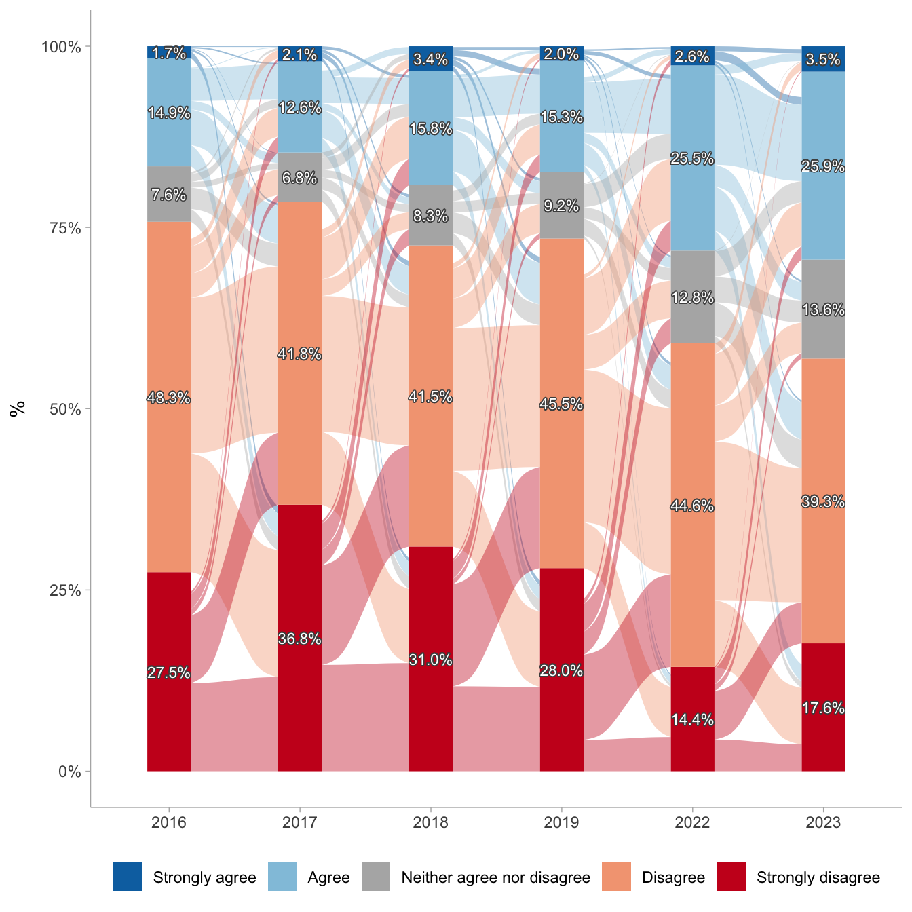
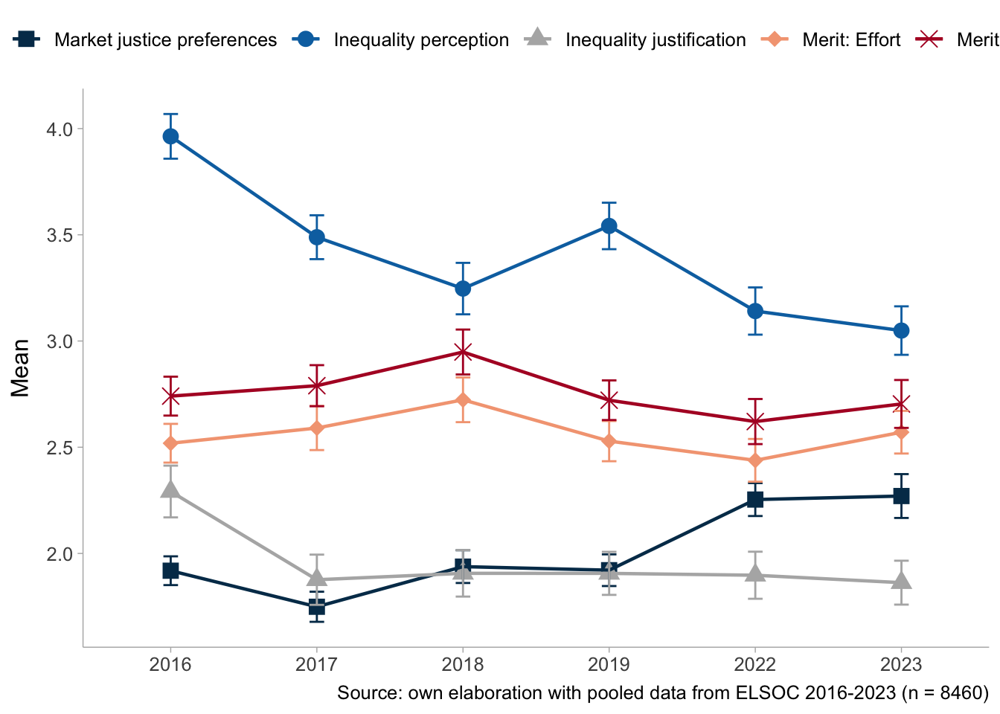
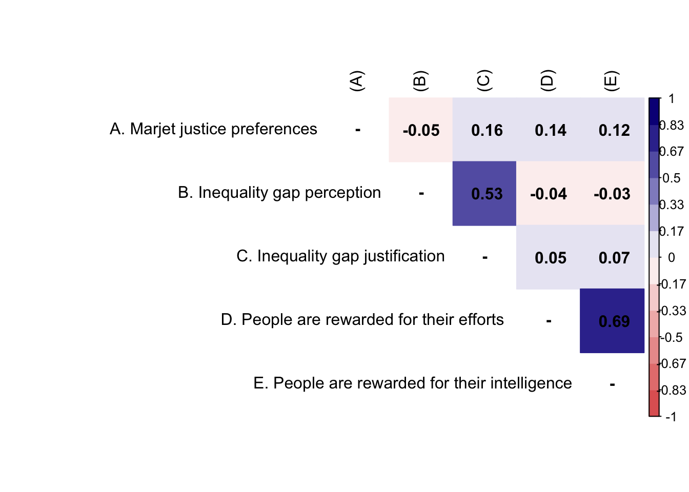

1 Presentation
This is the analysis code for the paper “Perceptions of Inequality and Meritocracy: Their Interplay in Shaping Preferences for Market Justice in Chile (2016-2023)”. The dataset used is df_study1_long_t7.RData.
2 Libraries
3 Data
Show the code
load(file = here("input/data/proc/df_study1_long_t7.RData"))
glimpse(df_study1_long_t7)Rows: 10,422
Columns: 29
$ idencuesta <dbl> 1101011, 1101012, 1101021, 1101023, 1101032, 110…
$ muestra <dbl> 1, 1, 1, 1, 1, 1, 1, 1, 1, 1, 1, 1, 1, 1, 1, 1, …
$ ola <fct> 1, 1, 1, 1, 1, 1, 1, 1, 1, 1, 1, 1, 1, 1, 1, 1, …
$ comuna <chr> "Iquique", "Iquique", "Iquique", "Iquique", "Iqu…
$ comunacod <dbl> 1101, 1101, 1101, 1101, 1101, 1101, 1101, 1101, …
$ ponderador_long_total <dbl> 0.11821742, 0.11821742, 0.05633656, 0.07703080, …
$ segmento <dbl> 110101, 110101, 110102, 110102, 110103, 110103, …
$ estrato <dbl> 4, 4, 4, 4, 4, 4, 4, 4, 4, 4, 4, 4, 4, 4, 4, 4, …
$ just_educ <fct> Strongly desagree, Desagree, Agree, Strongly des…
$ just_pension <fct> Strongly desagree, Desagree, Neither agree nor d…
$ just_health <fct> Desagree, Desagree, Agree, Strongly desagree, St…
$ mjp <dbl> 1.333333, 2.000000, 3.666667, 1.333333, 1.000000…
$ merit_effort <fct> Agree, Agree, Agree, Neither agree nor desagree,…
$ merit_talent <fct> Agree, Agree, Agree, Strongly agree, Strongly de…
$ perc_sal_gerente <dbl> 2000000, 500000, 20000000, 6000000, 4000000, 500…
$ perc_sal_obrero <dbl> 300000, 300000, 400000, 280000, 300000, 400000, …
$ just_sal_gerente <dbl> 2000000, 3000000, 200000000, 1800000, 300000, 50…
$ just_sal_obrero <dbl> 500000, 500000, 700000, 600000, 600000, 500000, …
$ perc_inequality <dbl> 1.8971200, 0.5108256, 3.9120230, 3.0647251, 2.59…
$ just_inequality <dbl> 1.3862944, 1.7917595, 5.6549923, 1.0986123, -0.6…
$ educ <fct> Less than Universitary, Less than Universitary, …
$ educyear <dbl> 4.30, 9.80, 14.90, 9.80, 12.02, 13.90, 12.02, 7.…
$ sex <fct> Female, Female, Male, Male, Female, Female, Male…
$ age <fct> 50-64, 50-64, 50-64, 50-64, 50-64, 30-49, 30-49,…
$ ess <dbl> 5, 5, 6, 5, 6, 7, 4, 0, 4, 5, 4, 3, 6, 3, 5, 8, …
$ ideo <fct> Does not identify, Does not identify, Does not i…
$ quintil <fct> Q1, Q4, Q5, Q5, Q4, Q4, Q2, Q2, Q2, Q5, Q4, Q2, …
$ quintil1 <fct> Q1, Q4, Q5, Q5, Q4, Q4, Q2, Q2, Q2, Q5, Q4, Q2, …
$ ing_pc <dbl> 75000.0, 250000.0, 765000.0, 490000.0, 250000.0,…Show the code
# Generate analytical sample
df_study1 <- df_study1_long_t7 %>%
select(idencuesta,
ola,
ponderador_long_total,
segmento,
estrato,
just_health,
just_pension,
just_educ,
mjp,
perc_inequality,
just_inequality,
merit_effort,
merit_talent,
educ,
quintil1,
sex,
age,
ess,
ideo) %>%
na.omit() %>%
mutate(ola = as.factor(ola),
ola_num = as.numeric(ola),
ola_2=as.numeric(ola)^2)
df_study1 <- df_study1 %>%
group_by(idencuesta) %>% # Agrupar por el identificador del participante
mutate(n_participaciones = n()) %>% # Contar el número de filas (participaciones) por participante
ungroup()
df_study1 <- df_study1 %>% filter(n_participaciones>1)
# Corregir etiquetas
df_study1$just_health <- sjlabelled::set_label(df_study1$just_health,
label = "Health distributive justice")
df_study1$just_pension <- sjlabelled::set_label(df_study1$just_pension,
label = "Pension distributive justice")
df_study1$just_educ <- sjlabelled::set_label(df_study1$just_educ,
label = "Education distributive justice")
df_study1$merit_effort <- sjlabelled::set_label(df_study1$merit_effort,
label = "People are rewarded for their efforts")
df_study1$merit_talent <- sjlabelled::set_label(df_study1$merit_talent,
label = "People are rewarded for their intelligence")4 Analysis
4.1 Descriptives
Show the code
Data Frame Summary
t1
Dimensions: 1477 x 4Duplicates: 1407
| No | Variable | Label | Stats / Values | Freqs (% of Valid) | Graph | Valid | Missing | |||||||||||||||||||||||||
|---|---|---|---|---|---|---|---|---|---|---|---|---|---|---|---|---|---|---|---|---|---|---|---|---|---|---|---|---|---|---|---|---|
| 1 | just_health [factor] | Health distributive justice |
|
|
 |
1477 (100.0%) | 0 (0.0%) | |||||||||||||||||||||||||
| 2 | just_pension [factor] | Pension distributive justice |
|
|
 |
1477 (100.0%) | 0 (0.0%) | |||||||||||||||||||||||||
| 3 | just_educ [factor] | Education distributive justice |
|
|
 |
1477 (100.0%) | 0 (0.0%) | |||||||||||||||||||||||||
| 4 | mjp [numeric] | Market justice preferences |
|
12 distinct values |  |
1477 (100.0%) | 0 (0.0%) |
Generated by summarytools 1.0.1 (R version 4.2.2)
2025-04-11
Show the code
Data Frame Summary
t2
Dimensions: 1477 x 4Duplicates: 84
| No | Variable | Label | Stats / Values | Freqs (% of Valid) | Graph | Valid | Missing | |||||||||||||||||||||||||
|---|---|---|---|---|---|---|---|---|---|---|---|---|---|---|---|---|---|---|---|---|---|---|---|---|---|---|---|---|---|---|---|---|
| 1 | perc_inequality [numeric] | Inequality gap perception |
|
294 distinct values |  |
1477 (100.0%) | 0 (0.0%) | |||||||||||||||||||||||||
| 2 | just_inequality [numeric] | Inequality gap justification |
|
215 distinct values |  |
1477 (100.0%) | 0 (0.0%) | |||||||||||||||||||||||||
| 3 | merit_effort [factor] | People are rewarded for their efforts |
|
|
 |
1477 (100.0%) | 0 (0.0%) | |||||||||||||||||||||||||
| 4 | merit_talent [factor] | People are rewarded for their intelligence |
|
|
 |
1477 (100.0%) | 0 (0.0%) |
Generated by summarytools 1.0.1 (R version 4.2.2)
2025-04-11
Show the code
datos.health <- df_study1 %>%
mutate(just_health = factor(just_health,
levels = c("Strongly agree",
"Agree",
"Neither agree nor desagree",
"Desagree",
"Strongly desagree"))) %>%
group_by(idencuesta, ola) %>%
count(just_health) %>%
group_by(ola) %>%
mutate(porcentaje=n/sum(n)) %>%
ungroup() %>%
na.omit() %>%
mutate(wave = case_when(ola == 1 ~ "2016",
ola == 2 ~ "2017",
ola == 3 ~ "2018",
ola == 4 ~ "2019",
ola == 6 ~ "2022",
ola == 7 ~ "2023"),
wave = factor(wave, levels = c("2016",
"2017",
"2018",
"2019",
"2022",
"2023")))
etiquetas.health <- df_study1 %>%
mutate(just_health = factor(just_health,
levels = c("Strongly agree",
"Agree",
"Neither agree nor desagree",
"Desagree",
"Strongly desagree"))) %>%
group_by(ola, just_health) %>%
summarise(count = n(), .groups = "drop") %>%
group_by(ola) %>%
mutate(porcentaje = count / sum(count)) %>%
na.omit() %>%
mutate(idencuesta = 1,
wave = case_when(ola == 1 ~ "2016",
ola == 2 ~ "2017",
ola == 3 ~ "2018",
ola == 4 ~ "2019",
ola == 6 ~ "2022",
ola == 7 ~ "2023"),
wave = factor(wave, levels = c("2016",
"2017",
"2018",
"2019",
"2022",
"2023")))
p1 <- datos.health %>%
ggplot(aes(x = wave, fill = just_health, stratum = just_health,
alluvium = idencuesta, y = porcentaje)) +
ggalluvial::geom_flow(alpha = .4) +
ggalluvial::geom_stratum(linetype = 0) +
scale_y_continuous(labels = scales::percent) +
scale_fill_manual(values = c("#0571B0","#92C5DE","#b3b3b3ff","#F4A582","#CA0020")) +
geom_shadowtext(data = etiquetas.health,
aes(label = ifelse(porcentaje > 0 , scales::percent(porcentaje, accuracy = .1),"")),
position = position_stack(vjust = .5),
show.legend = FALSE,
size = 3,
color = rep('white'),
bg.colour='grey30')+
labs(y = "%",
x = NULL,
fill = NULL,
title = "a. Health") +
theme_ggdist() +
theme(legend.position = "none")
datos.pension <- df_study1 %>%
mutate(just_pension = factor(just_pension,
levels = c("Strongly agree",
"Agree",
"Neither agree nor desagree",
"Desagree",
"Strongly desagree"))) %>%
group_by(idencuesta, ola) %>%
count(just_pension) %>%
group_by(ola) %>%
mutate(porcentaje=n/sum(n)) %>%
ungroup() %>%
na.omit() %>%
mutate(wave = case_when(ola == 1 ~ "2016",
ola == 2 ~ "2017",
ola == 3 ~ "2018",
ola == 4 ~ "2019",
ola == 6 ~ "2022",
ola == 7 ~ "2023"),
wave = factor(wave, levels = c("2016",
"2017",
"2018",
"2019",
"2022",
"2023")))
etiquetas.pension <- df_study1 %>%
mutate(just_pension = factor(just_pension,
levels = c("Strongly agree",
"Agree",
"Neither agree nor desagree",
"Desagree",
"Strongly desagree"))) %>%
group_by(ola, just_pension) %>%
summarise(count = n(), .groups = "drop") %>%
group_by(ola) %>%
mutate(porcentaje = count / sum(count)) %>%
na.omit() %>%
mutate(idencuesta = 1,
wave = case_when(ola == 1 ~ "2016",
ola == 2 ~ "2017",
ola == 3 ~ "2018",
ola == 4 ~ "2019",
ola == 6 ~ "2022",
ola == 7 ~ "2023"),
wave = factor(wave, levels = c("2016",
"2017",
"2018",
"2019",
"2022",
"2023")))
p2 <- datos.pension %>%
ggplot(aes(x = wave, fill = just_pension, stratum = just_pension,
alluvium = idencuesta, y = porcentaje)) +
ggalluvial::geom_flow(alpha = .4) +
ggalluvial::geom_stratum(linetype = 0) +
scale_y_continuous(labels = scales::percent) +
scale_fill_manual(values = c("#0571B0","#92C5DE","#b3b3b3ff","#F4A582","#CA0020")) +
geom_shadowtext(data = etiquetas.pension,
aes(label = ifelse(porcentaje > 0 , scales::percent(porcentaje, accuracy = .1),"")),
position = position_stack(vjust = .5),
show.legend = FALSE,
size = 3,
color = rep('white'),
bg.colour='grey30')+
labs(y = "%",
x = NULL,
fill = NULL,
title = "b. Pension") +
theme_ggdist() +
theme(legend.position = "none")
datos.educ <- df_study1 %>%
mutate(just_educ = factor(just_educ,
levels = c("Strongly agree",
"Agree",
"Neither agree nor desagree",
"Desagree",
"Strongly desagree"))) %>%
group_by(idencuesta, ola) %>%
count(just_educ) %>%
group_by(ola) %>%
mutate(porcentaje=n/sum(n)) %>%
ungroup() %>%
na.omit() %>%
mutate(wave = case_when(ola == 1 ~ "2016",
ola == 2 ~ "2017",
ola == 3 ~ "2018",
ola == 4 ~ "2019",
ola == 6 ~ "2022",
ola == 7 ~ "2023"),
wave = factor(wave, levels = c("2016",
"2017",
"2018",
"2019",
"2022",
"2023")))
etiquetas.educ <- df_study1 %>%
mutate(just_educ = factor(just_educ,
levels = c("Strongly agree",
"Agree",
"Neither agree nor desagree",
"Desagree",
"Strongly desagree"))) %>%
group_by(ola, just_educ) %>%
summarise(count = n(), .groups = "drop") %>%
group_by(ola) %>%
mutate(porcentaje = count / sum(count)) %>%
na.omit() %>%
mutate(idencuesta = 1,
wave = case_when(ola == 1 ~ "2016",
ola == 2 ~ "2017",
ola == 3 ~ "2018",
ola == 4 ~ "2019",
ola == 6 ~ "2022",
ola == 7 ~ "2023"),
wave = factor(wave, levels = c("2016",
"2017",
"2018",
"2019",
"2022",
"2023")))
p3 <- datos.educ %>%
ggplot(aes(x = wave, fill = just_educ, stratum = just_educ,
alluvium = idencuesta, y = porcentaje)) +
ggalluvial::geom_flow(alpha = .4) +
ggalluvial::geom_stratum(linetype = 0) +
scale_y_continuous(labels = scales::percent) +
scale_fill_manual(values = c("#0571B0","#92C5DE","#b3b3b3ff","#F4A582","#CA0020")) +
geom_shadowtext(data = etiquetas.educ,
aes(label = ifelse(porcentaje > 0 , scales::percent(porcentaje, accuracy = .1),"")),
position = position_stack(vjust = .5),
show.legend = FALSE,
size = 3,
color = rep('white'),
bg.colour='grey30')+
labs(y = "%",
x = NULL,
fill = NULL,
title = "c. Education",
caption = "Source: own elaboration with pooled data from ELSOC 2016-2023 (n = 8460)") +
theme_ggdist() +
theme(legend.position = "bottom")
(p1 / p2 / p3)

Show the code
library(srvyr)
df_pond <- df_study1 %>%
mutate(ola = case_when(ola == 1 ~ "2016",
ola == 2 ~ "2017",
ola == 3 ~ "2018",
ola == 4 ~ "2019",
ola == 6 ~ "2022",
ola == 7 ~ "2023"),
ola = factor(ola, levels = c("2016",
"2017",
"2018",
"2019",
"2022",
"2023"))) %>%
as_survey_design(.data = .,
ids = segmento,
strata = estrato,
weights = ponderador_long_total)
df_pond %>%
select(ola, mjp, perc_inequality, just_inequality, merit_effort, merit_talent) %>%
mutate_at(.vars = 2:6, .funs = ~ as.numeric(.)) %>%
group_by(ola) %>%
summarise_all(~survey_mean(., vartype = "ci")) %>%
pivot_longer(cols = -ola,
names_to = "temp",
values_to = "valor") %>%
mutate(
ci = case_when(
str_ends(temp, "_low") ~ "ic_low",
str_ends(temp, "_upp") ~ "ic_upp",
TRUE ~ "mean"
),
variable = str_remove(temp, "_low|_upp")
) %>%
select(ola, variable, ci, valor) %>%
pivot_wider(
names_from = ci,
values_from = valor
) %>%
mutate(variable = case_when(variable == "mjp" ~ "Market justice preferences",
variable == "perc_inequality" ~ "Inequality perception",
variable == "just_inequality" ~ "Inequality justification",
variable == "merit_effort" ~ "Merit: Effort",
variable == "merit_talent" ~ "Merit: Talent"),
variable = factor(variable, levels = c("Market justice preferences",
"Inequality perception",
"Inequality justification",
"Merit: Effort",
"Merit: Talent")
)) %>%
ggplot(aes(x = ola, y = mean, group = variable)) +
geom_point(aes(shape=variable, color=variable), size = 3.5) +
geom_line(aes(color = variable), linewidth = 0.8) +
geom_errorbar(aes(ymin = ic_low, ymax = ic_upp, color = variable),
width = 0.1) +
scale_color_manual(values = c("#023858", # azul oscuro
"#0571B0", # azul intermedio
"#b3b3b3", # gris
"#F4A582", # salmón
"#B2182B" # rojo profundo
)) +
scale_shape_manual(values=c(15, 16, 17, 18, 4)) +
labs(y = "Mean",
x = NULL,
color = NULL,
shape = NULL,
caption = "Source: own elaboration with pooled data from ELSOC 2016-2023 (n = 8460)") +
theme_ggdist() +
theme(legend.position = "top",
text = element_text(size = 12)) 
4.2 Correlations
Show the code
M <- df_study1 %>%
filter(ola == 7) %>%
select(mjp, perc_inequality, just_inequality, merit_effort, merit_talent) %>%
mutate_all(.funs = ~ as.numeric(.)) %>%
cor(use = "pairwise.complete.obs", method = "pearson")
diag(M) <- NA
rownames(M) <- c("A. Marjet justice preferences",
"B. Inequality gap perception",
"C. Inequality gap justification",
"D. People are rewarded for their efforts ",
"E. People are rewarded for their intelligence")
#set Column names of the matrix
colnames(M) <-c("(A)", "(B)","(C)","(D)","(E)")
#Plot the matrix using corrplot
corrplot::corrplot(M,
method = "color",
addCoef.col = "black",
type = "upper",
tl.col = "black",
col = colorRampPalette(c("#E16462", "white", "#0D0887"))(12),
bg = "white",
na.label = "-") 
4.3 Longitudinal multilevel models
Show the code
df_study1$merit_effort <- as_numeric(df_study1$merit_effort)
df_study1$merit_talent <- as_numeric(df_study1$merit_talent)
df_study1 <- df_study1 %>%
mutate(ola = case_when(ola == 1 ~ "2016",
ola == 2 ~ "2017",
ola == 3 ~ "2018",
ola == 4 ~ "2019",
ola == 6 ~ "2022",
ola == 7 ~ "2023"),
ola = factor(ola, levels = c("2016",
"2017",
"2018",
"2019",
"2022",
"2023")))
df_study1 <- df_study1 %>%
group_by(idencuesta) %>%
mutate(perc_inequality_mean = mean(perc_inequality, na.rm = T),
perc_inequality_cwc = perc_inequality - perc_inequality_mean,
just_inequality_mean = mean(just_inequality, na.rm = T),
just_inequality_cwc = just_inequality - just_inequality_mean,
merit_effort_mean = mean(merit_effort, na.rm = T),
merit_effort_cwc = merit_effort - merit_effort_mean,
merit_talent_mean = mean(merit_talent, na.rm = T),
merit_talent_cwc = merit_talent - merit_talent_mean,
) %>%
ungroup()Show the code
m0 <- lmer(mjp ~ 1 + (1 | idencuesta),
data = df_study1)
performance::icc(m0, by_group = T)# ICC by Group
Group | ICC
------------------
idencuesta | 0.231Show the code
m1 <- lmer(mjp ~ 1 + ola + (1 | idencuesta),
data = df_study1)
m1.1 <- lmer(mjp ~ 1 + ola_num + ola_2 + (1 | idencuesta),
data = df_study1)
m2 <- lmer(mjp ~ 1 + ola_num + ola_2 + (1 + ola_num | idencuesta),
data = df_study1)
anova(m1.1, m2)Data: df_study1
Models:
m1.1: mjp ~ 1 + ola_num + ola_2 + (1 | idencuesta)
m2: mjp ~ 1 + ola_num + ola_2 + (1 + ola_num | idencuesta)
npar AIC BIC logLik deviance Chisq Df Pr(>Chisq)
m1.1 5 20299 20334 -10145 20289
m2 7 20234 20283 -10110 20220 69.409 2 0.0000000000000008471 ***
---
Signif. codes: 0 '***' 0.001 '**' 0.01 '*' 0.05 '.' 0.1 ' ' 1Show the code
m3 <- lmer(mjp ~ 1 + ola_num + ola_2 + perc_inequality + (1 + ola_num | idencuesta),
data = df_study1)
m4 <- lmer(mjp ~ 1 + ola_num + ola_2 + perc_inequality + just_inequality + (1 + ola_num | idencuesta),
data = df_study1)
m5 <- lmer(mjp ~ 1 + ola_num + ola_2 + perc_inequality + just_inequality + merit_effort + (1 + ola_num | idencuesta),
data = df_study1)
m6 <- lmer(mjp ~ 1 + ola_num + ola_2 + perc_inequality + just_inequality + merit_effort + merit_talent + (1 + ola_num | idencuesta),
data = df_study1)
m7 <- lmer(mjp ~ 1 + ola_num + ola_2 + perc_inequality + just_inequality + merit_effort + merit_talent + perc_inequality_mean + just_inequality_mean + merit_effort_mean + merit_talent_mean + (1 + ola_num | idencuesta),
data = df_study1)
m8 <- lmer(mjp ~ 1 + ola_num + ola_2 + perc_inequality + just_inequality + merit_effort + merit_talent + perc_inequality_mean + just_inequality_mean + merit_effort_mean + merit_talent_mean + educ + quintil1 + ess + ideo + sex + age + (1 + ola_num | idencuesta),
data = df_study1)
m9 <- lmer(mjp ~ 1 + ola_num + ola_2 + perc_inequality*ola_num + just_inequality + merit_effort + merit_talent + perc_inequality_mean + just_inequality_mean + merit_effort_mean + merit_talent_mean + educ + quintil1 + ess + ideo + sex + age + (1 + perc_inequality | idencuesta),
data = df_study1)
m10 <- lmer(mjp ~ 1 + ola_num + ola_2 + perc_inequality + just_inequality*ola_num + merit_effort + merit_talent + perc_inequality_mean + just_inequality_mean + merit_effort_mean + merit_talent_mean + educ + quintil1 + ess + ideo + sex + age + (1 + just_inequality| idencuesta),
data = df_study1)
m11 <- lmer(mjp ~ 1 + ola_num + ola_2 + perc_inequality + just_inequality + merit_effort*ola_num + merit_talent + perc_inequality_mean + just_inequality_mean + merit_effort_mean + merit_talent_mean + educ + quintil1 + ess + ideo + sex + age + (1 + merit_effort | idencuesta),
data = df_study1)
m12 <- lmer(mjp ~ 1 + ola_num + ola_2 + perc_inequality + just_inequality + merit_effort + merit_talent*ola_num + perc_inequality_mean + just_inequality_mean + merit_effort_mean + merit_talent_mean + educ + quintil1 + ess + ideo + sex + age + (1 + merit_talent | idencuesta),
data = df_study1)Show the code
ccoef <- list(
"(Intercept)" = "Intercept",
"ola2017" = "Wave 2017",
"ola2018" = "Wave 2018",
"ola2019" = "Wave 2019",
"ola2022" = "Wave 2022",
"ola2023" = "Wave 2023",
ola_num = "Wave",
ola_2 = "Wave^2",
perc_inequality = "Perception inequality (WE)",
just_inequality = "Justification inequality (WE)",
merit_effort = "Merit: Effort (WE)",
merit_talent = "Merit: Talent (WE)",
perc_inequality_mean = "Perception inequality (BE)",
just_inequality_mean = "Justification inequality (BE)",
merit_effort_mean = "Merit: Effort (BE)",
merit_talent_mean = "Merit: Talent (BE)",
educUniversitary = "Universitary (Ref.= Less than universitary)",
quintil1Q2 = "Quintile 2",
quintil1Q3 = "Quintile 3",
quintil1Q4 = "Quintile 4",
quintil1Q5 = "Quintile 5",
quintil1QNA = "Quintile NA",
ess = "Subjective social status",
ideoCenter = "Center",
ideoRight = "Right",
"ideoDoes not identify" = "Does not identify",
sexFemale = "Female (Ref.= Male)",
"age30-49" = "30-49",
"age50-64" = "50-64",
"age65 or more" = "65 or more"
)
texreg::htmlreg(list(m1, m2, m3, m4, m5, m6, m7, m8),
custom.model.names = c(paste0("Model ", seq(1:8))),
caption = NULL,
stars = c(0.05, 0.01, 0.001),
custom.coef.map = ccoef,
digits = 3,
groups = list("Wave (Ref.= 2016)" = 2:6, "Income (Ref.= Quintile 1)" = 18:22, "Political identification (Ref.= Left)" = 24:26, "Age (Ref. = 18-29)" = 28:30),
custom.note = "Note: Cells contain regression coefficients with standard errors in parentheses. %stars.",
threeparttable = T,
leading.zero = T,
float.pos = "h!",
use.packages = F,
booktabs = T,
scalebox = 1)| Model 1 | Model 2 | Model 3 | Model 4 | Model 5 | Model 6 | Model 7 | Model 8 | |
|---|---|---|---|---|---|---|---|---|
| Intercept | 1.964*** | 1.966*** | 2.103*** | 2.059*** | 1.752*** | 1.721*** | 1.541*** | 1.574*** |
| (0.022) | (0.033) | (0.046) | (0.045) | (0.052) | (0.053) | (0.095) | (0.112) | |
| Wave (Ref.= 2016) | ||||||||
| Wave 2017 | -0.162*** | |||||||
| (0.028) | ||||||||
| Wave 2018 | -0.015 | |||||||
| (0.027) | ||||||||
| Wave 2019 | -0.041 | |||||||
| (0.027) | ||||||||
| Wave 2022 | 0.289*** | |||||||
| (0.028) | ||||||||
| Wave 2023 | 0.286*** | |||||||
| (0.027) | ||||||||
| Wave | -0.069*** | -0.072*** | -0.057** | -0.057** | -0.058** | -0.064*** | -0.064*** | |
| (0.018) | (0.018) | (0.018) | (0.018) | (0.018) | (0.018) | (0.018) | ||
| Wave^2 | 0.017*** | 0.017*** | 0.015*** | 0.015*** | 0.015*** | 0.016*** | 0.016*** | |
| (0.002) | (0.002) | (0.002) | (0.002) | (0.002) | (0.002) | (0.002) | ||
| Perception inequality (WE) | -0.037*** | -0.086*** | -0.075*** | -0.074*** | -0.056*** | -0.056*** | ||
| (0.009) | (0.010) | (0.010) | (0.010) | (0.011) | (0.011) | |||
| Justification inequality (WE) | 0.100*** | 0.095*** | 0.094*** | 0.055*** | 0.055*** | |||
| (0.009) | (0.009) | (0.009) | (0.010) | (0.010) | ||||
| Merit: Effort (WE) | 0.107*** | 0.088*** | 0.071*** | 0.071*** | ||||
| (0.009) | (0.011) | (0.012) | (0.012) | |||||
| Merit: Talent (WE) | 0.029* | 0.025* | 0.025* | |||||
| (0.011) | (0.012) | (0.012) | ||||||
| Perception inequality (BE) | -0.077*** | -0.078*** | ||||||
| (0.023) | (0.023) | |||||||
| Justification inequality (BE) | 0.156*** | 0.131*** | ||||||
| (0.021) | (0.021) | |||||||
| Merit: Effort (BE) | 0.092** | 0.088** | ||||||
| (0.033) | (0.033) | |||||||
| Merit: Talent (BE) | -0.006 | -0.016 | ||||||
| (0.033) | (0.033) | |||||||
| Universitary (Ref.= Less than universitary) | -0.006 | |||||||
| (0.035) | ||||||||
| Income (Ref.= Quintile 1) | ||||||||
| Quintile 2 | 0.000 | |||||||
| (0.038) | ||||||||
| Quintile 3 | 0.034 | |||||||
| (0.038) | ||||||||
| Quintile 4 | 0.093* | |||||||
| (0.039) | ||||||||
| Quintile 5 | 0.147*** | |||||||
| (0.042) | ||||||||
| Quintile NA | 0.172** | |||||||
| (0.066) | ||||||||
| Subjective social status | -0.007 | |||||||
| (0.008) | ||||||||
| Political identification (Ref.= Left) | ||||||||
| Center | 0.058 | |||||||
| (0.037) | ||||||||
| Right | 0.246*** | |||||||
| (0.042) | ||||||||
| Does not identify | 0.092** | |||||||
| (0.032) | ||||||||
| Female (Ref.= Male) | -0.080** | |||||||
| (0.026) | ||||||||
| Age (Ref. = 18-29) | ||||||||
| 30-49 | -0.010 | |||||||
| (0.037) | ||||||||
| 50-64 | 0.002 | |||||||
| (0.038) | ||||||||
| 65 or more | 0.004 | |||||||
| (0.046) | ||||||||
| AIC | 20273.132 | 20260.158 | 20251.351 | 20140.808 | 20002.562 | 20005.214 | 19957.283 | 19986.833 |
| BIC | 20329.477 | 20309.460 | 20307.696 | 20204.196 | 20072.993 | 20082.688 | 20062.929 | 20191.083 |
| Log Likelihood | -10128.566 | -10123.079 | -10117.676 | -10061.404 | -9991.281 | -9991.607 | -9963.641 | -9964.417 |
| Num. obs. | 8460 | 8460 | 8460 | 8460 | 8460 | 8460 | 8460 | 8460 |
| Num. groups: idencuesta | 1681 | 1681 | 1681 | 1681 | 1681 | 1681 | 1681 | 1681 |
| Var: idencuesta (Intercept) | 0.174 | 0.214 | 0.210 | 0.204 | 0.179 | 0.178 | 0.180 | 0.172 |
| Var: Residual | 0.528 | 0.494 | 0.494 | 0.493 | 0.490 | 0.490 | 0.488 | 0.488 |
| Var: idencuesta ola_num | 0.007 | 0.007 | 0.007 | 0.006 | 0.006 | 0.006 | 0.006 | |
| Cov: idencuesta (Intercept) ola_num | -0.018 | -0.017 | -0.018 | -0.015 | -0.015 | -0.016 | -0.016 | |
| Note: Cells contain regression coefficients with standard errors in parentheses. ***p < 0.001; **p < 0.01; *p < 0.05. | ||||||||
Show the code
ccoef <- list(
"(Intercept)" = "Intercept",
"ola_num:perc_inequality" = "Perception inequality (WE) x Wave",
"ola_num:just_inequality" = "Justification inequality (WE) x Wave",
"ola_num:merit_effort" = "Merit: Effort (WE) x Wave",
"ola_num:merit_talent" = "Merit: Talent (WE) x Wave"
)
texreg::htmlreg(list(m9,m10,m11,m12),
custom.model.names = c(paste0("Model ", seq(9:12))),
caption = NULL,
stars = c(0.05, 0.01, 0.001),
custom.coef.map = ccoef,
digits = 3,
custom.note = "Note: Cells contain regression coefficients with standard errors in parentheses. %stars.",
threeparttable = T,
leading.zero = T,
float.pos = "h!",
use.packages = F,
booktabs = T,
scalebox = 1)| Model 1 | Model 2 | Model 3 | Model 4 | |
|---|---|---|---|---|
| Intercept | 1.611*** | 1.716*** | 1.461*** | 1.474*** |
| (0.124) | (0.112) | (0.118) | (0.119) | |
| Perception inequality (WE) x Wave | 0.001 | |||
| (0.004) | ||||
| Justification inequality (WE) x Wave | 0.015*** | |||
| (0.003) | ||||
| Merit: Effort (WE) x Wave | -0.012** | |||
| (0.004) | ||||
| Merit: Talent (WE) x Wave | -0.010* | |||
| (0.004) | ||||
| AIC | 20053.598 | 19988.291 | 20003.746 | 19999.606 |
| BIC | 20264.891 | 20199.584 | 20215.039 | 20210.899 |
| Log Likelihood | -9996.799 | -9964.145 | -9971.873 | -9969.803 |
| Num. obs. | 8460 | 8460 | 8460 | 8460 |
| Num. groups: idencuesta | 1681 | 1681 | 1681 | 1681 |
| Var: idencuesta (Intercept) | 0.152 | 0.078 | 0.219 | 0.214 |
| Var: idencuesta perc_inequality | 0.002 | |||
| Cov: idencuesta (Intercept) perc_inequality | -0.007 | |||
| Var: Residual | 0.520 | 0.512 | 0.503 | 0.502 |
| Var: idencuesta just_inequality | 0.012 | |||
| Cov: idencuesta (Intercept) just_inequality | -0.000 | |||
| Var: idencuesta merit_effort | 0.024 | |||
| Cov: idencuesta (Intercept) merit_effort | -0.049 | |||
| Var: idencuesta merit_talent | 0.023 | |||
| Cov: idencuesta (Intercept) merit_talent | -0.048 | |||
| Note: Cells contain regression coefficients with standard errors in parentheses. ***p < 0.001; **p < 0.01; *p < 0.05. | ||||